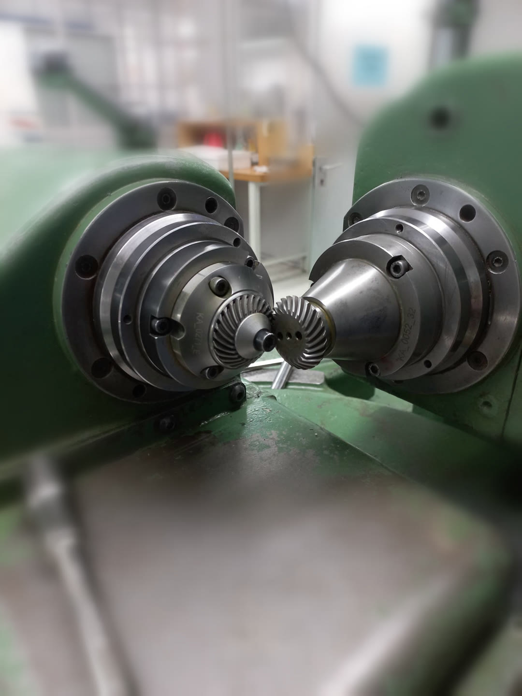
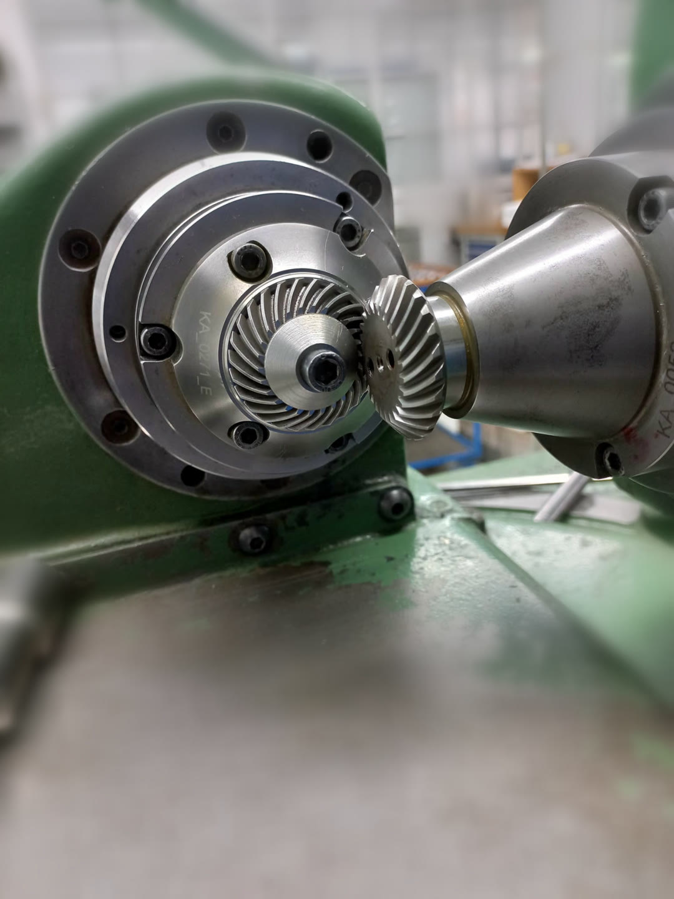

Listening to Gears: The Physics of the Gear Mesh
When a gear pair runs, it produces a tone. Its pitch is set by the tooth count and speed. How loud that tone is depends on how accurately the teeth were made. Small modulations around it show which shaft or which tooth is at fault. In my previous article, Gear Lapping: More Than Noise, I described lapping as a way to lower that tone. This article explains the physics behind that tone.
Put simply, tooth count and speed decide the frequencies you see in a gear's vibration, manufacturing quality decides how strong they are, and reading the spectrum tells you which part is at fault.

Transmission error: where the vibration starts
If two gears were perfect and perfectly rigid, the driven gear would turn at exactly the ratio of the tooth counts, with no fluctuation. This is however mythical and theoretical as real gears never do. Transmission error (TE) is the difference between where the driven gear should be and where it actually is, usually expressed as a distance along the line of action in micrometres.
Three things cause it. The tooth flanks are never exact involutes, and those small profile and lead deviations repeat at every tooth. The mesh stiffness changes as the number of teeth in contact changes, so the pair deflects unevenly under load. Pitch errors and runout, where teeth are unevenly spaced or a gear sits off-centre on its shaft, add errors that repeat once per revolution instead of once per tooth.
TE is a tiny motion, a few micrometres, but it acts like a forcing displacement between two stiff bodies. The resulting force fluctuation travels through shafts and bearings into the housing, which radiates it as sound. Every frequency in a gear noise spectrum traces back to how TE repeats in time.
Gear-mesh frequency and its harmonics
The part of TE that repeats at every tooth engagement produces the dominant tone, the gear-mesh frequency (GMF):
Here z is the number of teeth and n the shaft speed in rpm. GMF is the same whichever gear you count from, because both gears pass the same number of teeth through the mesh per second.
For instance, a bevel pair: a 12-tooth pinion at 3000 rpm driving a 37-tooth gear.
- Pinion shaft frequency: 3000 / 60 = 50 Hz
- Gear shaft frequency: 50 × 12 / 37 = 16.2 Hz
- Gear-mesh frequency: 12 × 50 = 600 Hz
TE is not a pure sine wave. Each engagement has a shape: a tooth picks up load, carries it and hands it on. The spectrum therefore shows harmonics at 2× GMF (1200 Hz) and 3× GMF (1800 Hz). Their relative heights describe the shape of the error. Strong higher harmonics point to sharp load transfer, for example missing tip relief or a contact ratio that is too low.
GMF depends only on tooth count and speed, never on quality. A perfect gear and a damaged gear whine at the same pitch, what differs is how loud the tone is and what surrounds it.
Sidebands: which shaft is at fault
Some errors repeat once per revolution, not once per tooth. A gear with runout (eccentricity) moves closer to and further from its mate as it turns, so the mesh is pressed harder on one side of the revolution than the other. The mesh tone gets louder and quieter once per turn. In signal terms, the GMF carrier is amplitude-modulated by the shaft frequency:
In the spectrum this modulation appears as sidebands, smaller peaks on either side of GMF at fGMF ± fshaft. Their spacing tells you which shaft is responsible:
- Sidebands at 600 ± 50 Hz (550 and 650 Hz) point to the pinion, which turns at 50 Hz.
- Sidebands at 600 ± 16.2 Hz point to the gear.
The height of the sidebands relative to GMF indicates how strong the modulation is. Accumulated pitch error behaves the same way. A single damaged tooth produces a short impact once per revolution, which spreads into a whole family of sidebands at that shaft's frequency.
One more frequency is worth knowing: the hunting-tooth frequency. This is how often the same pair of teeth meets again:
For 12 and 37 teeth, which share no common factor, fHT = 600 / 444 = 1.35 Hz. Every tooth meets every other tooth before the pattern repeats, which spreads wear evenly. This is why designers prefer tooth counts with no common factor. A defect on one pinion tooth and one gear tooth only coincides at this slow rate, so it shows up as a slow beat in the time signal.
Contact overlap: why gear types sound different
A spur gear tooth engages across its whole face width at once, so load arrives and leaves abruptly. On helical, spiral bevel and hypoid gears, the teeth are inclined. Each tooth enters the mesh gradually from one end of the face to the other, and several teeth share the load at any moment. This is measured by the face (overlap) contact ratio:
Here b is the face width, β the helix or spiral angle, and m the module. The more the engagements overlap, the more the per-tooth fluctuations average out. The n-th mesh harmonic is attenuated roughly as |sinc(n · εβ)|. When εβ is close to a whole number, the stiffness variation largely cancels. This is why a well-designed helical pair can be several decibels quieter than a spur pair with the same tooth count.

| Gear type | Tooth engagement | Sliding | Spectral signature | Typical efficiency |
|---|---|---|---|---|
| Spur | Whole face at once, εβ = 0 | Low | Strong GMF and clear harmonics | 97–99 % |
| Helical | Gradual, εβ ≈ 1.2 at 20° | Low | Lower GMF, harmonics strongly attenuated | 97–99 % |
| Straight bevel | Whole face at once, like spur, on 90° axes | Low | Spur-like, strong GMF | 97–99 % |
| Spiral bevel | Gradual along a curved tooth, εβ ≈ 1.8 at 35° | Moderate | Smooth GMF, sensitive to mounting and contact pattern | 96–99 % |
| Hypoid | Gradual, offset axes, εβ ≈ 2.5 at 45° | High (lengthwise sliding) | Quiet GMF but higher broadband friction noise | 90–96 % |
| Worm | Continuous line contact, εβ ≈ 2.4 assumed | Very high | Low tonal content, more broadband noise, GMF = worm starts × worm speed | Depends on lead angle (about 66 % for a single start at μ = 0.05) |
| Planetary | Several planets mesh at once | Low | GMF plus planet-pass sidebands at carrier frequency | 97–99 % per stage |
Two cases need a note. For the worm, efficiency follows the lead angle γ and the friction angle φ: η = tan γ / tan(γ + φ). With μ = 0.05, a single-start worm reaches only about two-thirds. For the planetary stage, the sensor sits on the ring gear. Each planet passes the sensor in turn, so the mesh tone swells and fades at the carrier rate. With a 21-tooth sun at 3000 rpm and 24-tooth planets (69-tooth ring), the carrier turns at 11.7 Hz and GMF is 805 Hz.
The εβ values are examples for a face width of about 10 modules (helical) and 8 modules (bevel and hypoid). The efficiency ranges are typical values, not test results.
What lapping changes in the spectrum
Lapping does not move any frequency. Tooth counts and speeds stay the same, so GMF, its harmonics and the sideband positions stay exactly where they were. What changes is the amplitudes. The lap wears down the high spots that make up TE, evens out tooth-to-tooth spacing and reduces the effect of small runout, because the pair is finished against itself.
An illustrative example of error levels before and after lapping:
| Error source | Unlapped | Lapped | Shows up as |
|---|---|---|---|
| Mesh error amplitude | 8 µm | 3 µm | Height of GMF and its harmonics |
| Tooth-to-tooth spacing error | 5 µm | 1.2 µm | Irregular per-tooth pattern, a raised floor between peaks |
| Runout | 15 µm | 9 µm | Height of the sidebands at GMF ± shaft frequency |
Because the GMF amplitude scales with TE, cutting the mesh error from 8 to 3 µm lowers the 1× GMF peak by 20 · log10(3/8) ≈ −8.5 dB. The sidebands shrink as well, and the noise floor between the peaks drops as the spacing errors are evened out. The spectrum ends up with fewer and clearer peaks.
Lower mesh amplitudes and fewer sidebands are also what condition monitoring follows over a gear's life.
Reading a gear spectrum in practice
With the frequencies worked out in advance, a vibration spectrum becomes a checklist:
- Work out the expected lines first: both shaft frequencies, GMF with its 2× and 3× harmonics, and the hunting-tooth frequency. Mark them on the plot before you look at the data.
- Compare the GMF level with a baseline. If it rises over time, TE is growing, from wear, pitting or a contact pattern that has moved.
- Measure the sideband spacing. It equals the speed of the shaft at fault. A wide family of sidebands usually means a local defect rather than plain eccentricity.
- Watch the harmonics. When 2× GMF grows relative to 1×, the tooth shape or load sharing has changed, often from wear or misalignment.
- Look between the peaks too. A rising broadband floor points to friction, poor lubrication or surface damage, especially on hypoid and worm sets.
Resolution matters. Separating sidebands 16 Hz apart near 600 Hz needs a resolution of a few hertz or better, which means a measurement record of at least about one second. A Hann window then keeps the sidebands as separate peaks rather than merging them into the GMF line.
Why this precision matters
The gears in these photos are small enough to hold between two fingers, and the errors that matter on them are a few micrometres. That is not perfectionism. It is what the industries that use such gears now expect from them.
Take robotics. Every joint of a robot arm has a gear stage between the motor and the link. Backlash or transmission error in that stage turns into a position error at the gripper, and the longer the arm, the bigger that error gets at the tool. The mesh vibration can also excite the arm itself, so the robot shakes a little when it stops at a point. If it has to place a part to within a few hundredths of a millimetre, thousands of times a day, a poor gear cannot hide.
In medical technology the margin is even smaller. A surgical robot must move smoothly and repeatably, with no jerk that the surgeon feels through the controls. Dental handpieces run tiny bevel gears at very high speed, which pushes the mesh tone up into the range where our hearing is most sensitive. A 12-tooth pinion at 20,000 rpm already meshes at 4 kHz, right next to the patient's ear. On top of that, these gears have to survive repeated cleaning and sterilisation without losing their fit.
Machine tools are no different. In angle heads and driven tools, any error in the gear stage ends up on the workpiece as chatter marks or a poor surface finish.
In all of these fields, a gear is no longer judged only by whether it breaks. It is judged by how precisely it moves, how quietly it runs and how long it keeps doing both. Transmission error, the mesh tone and its sidebands are how we measure exactly that, and it is why steps like lapping and a final run on the test-rolling machine are still worth the effort.
What this picture can and cannot tell you
This frequency picture is only useful when its limits are clear.
What it gives reliably is the frequencies. Shaft speeds, GMF and its harmonics, the hunting tooth, planet-pass and sideband positions all follow from geometry and speed, and so does the way contact overlap damps the harmonics.
The amplitudes are another matter. The TE values in this article are examples chosen to show the trend, not calculated from tooth geometry and load, so the −8.5 dB lapping effect shows the mechanism rather than predicting a specific gear set. Gearbox dynamics, housing resonances, loaded tooth contact analysis, real micro-geometry such as crowning and tip relief, and strength ratings such as ISO 6336 are all left out.
Use it to understand what a spectrum means and to identify which peak belongs to which component. For design decisions or noise predictions, measured TE or a full contact analysis is still required.
Conclusion
A gear mesh gives away a lot about its own condition. Tooth count and speed set the pitch. Transmission error sets the loudness. Runout and pitch errors add sidebands that point to the responsible shaft. Contact overlap explains why helical, spiral bevel and hypoid gears run quieter than spur and straight bevel gears. Lapping does not change any of these frequencies, it lowers the amplitudes, and the spectrum shows it.
The same reading turns a vibration measurement into a diagnosis: which gear, which fault, and whether it is getting worse. It also closes the loop with my first article, Gear Lapping: More Than Noise. The benefit of lapping is not only something you hear, you can measure it.